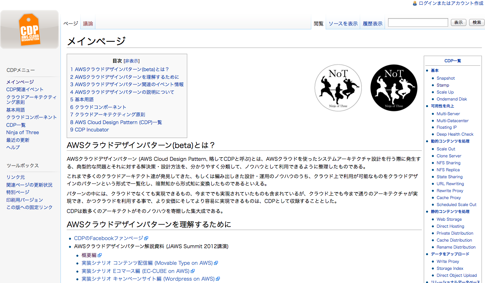

AWSでのデプロイの話
Terunori Togo (@terut)
デプロイといえば
Capistrano
多分に偏見が入っています
デプロイするには
deploy.rb書いて
$ bundle exec cap production deploy
capistrano_extは使ってるよね、ね
簡単ですね
ある日
某PHPプロジェクト降臨
AWS使ってた
簡単ですね
僕等にはCapistranoあるし、PHPでの採用実績も
色々あるっぽい
AWSは簡単じゃなかった

Auto Scaling
ELB（ロードバランサ）にぶらさがってるインスタンスの
CPU使用率の平均が50%以上だったらインスタンス追加
とかできる
Capistranoによるデプロイ
デプロイ先は固定であり、勝手に増殖するインスタンスの
面倒は見れない

かくして僕の切り札は
やぶれたやばい
先人の知恵
某PHPプロジェクトはよく考えられてた
説明しよう

頭よい
僕にはセンスなんてなかったんやー
Batch散らばりすぎやばい
集約したいよね、ね
セイヤーッ！

http://aws.clouddesignpattern.org
クラウドデザインパターン
センスのない僕とー、AWSクラウドデザインパターンがー、
出会ったー
Clone Server Pattern

俺たちのrsync
そうやrsyncやrsyncなんやー
NEW アプローチ
owlsync

仕組み
Deploy ServerにAuto Scalingであがってきたインスタンスを 監視するデーモンを立てて新しく立ち上がってきたらrsync
既に同期したものは同期しない
https://github.com/terut/owlsync
動作確認して本番投入
できませんでした
言い訳
- Twigがowner apacheではいて発狂
- cronの設定ファイルはowner rootじゃないと動かない発狂
- つまりdeploy用のユーザとrootとapacheが入り乱れて発狂
- rsyncがsudoで動くように各サーバにrsync用のスクリプトを置く必要があって発狂
- owlsyncみたいなテストないgemは使うなってばあちゃんが言ってた
- 設計固まってなかったので試してみて成功したらテスト書くつもりだったけど言い訳
- テスト書きますすいません
先人の知恵は偉大
さっさと安定させたかったので、svnのデプロイを
gitにリプレイスした
かっー、安定運用いいわー、かっー
Shibuya.rbでヒント得た
- user scriptで起動時にrsync
- s3syncを使って同期(できるのかしら)
- もっと良い方法あれば教えて
NFSは止まると処理がブロックされてアボーンするので
やりたくない
AWSこわくない
AWSで楽しいデプロイライフを！
間違ってもrootでシステムを運用するんじゃないぞ！